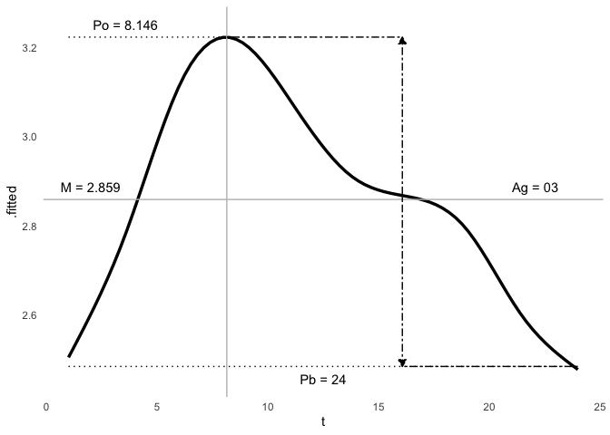

card


Cardiovascular and Autonomic Research Design
The goal of card is to create functions and analytical approaches in neurocardiology, with a focus on electrocardiogram data and epidemiological concepts. An important engine within this ecosystem are the circadian analysis tools. Its developed to fit a tidy approach to statistical analysis.
The areas of focus of this package are the following:
- cardiovascular disease
- circadian rhythms
- electrocardiography (heart rate variability and morphology)
- signal processing
Installation
Once published, you can install the released version of card from CRAN with:
#install.packages("card")
And the development version from GitHub with:
# install.packages("devtools") devtools::install_github("asshah4/card")
Usage
This package is intended for analyzing cardiovascular signals and autonomic physiology. The current collection of functions are built practically around this paradigm. The current focus, in card v0.1.0 is the development of a flexible and tidy analytical approach to circadian rhythms.
Datasets
It comes with several useful datasets:
- Cardiovascular disease outcomes with recurrent events
- Vectorcardiography data in a high-risk cohort
- Continuous electrocardiography recordings in a clinical cohort with quantitative stress data
# ECG data data("twins") head(twins) #> # A tibble: 6 x 23 #> # Groups: patid, hour [6] #> patid age bmi race smoking hptn dm chf prevchd med_beta_blocke… #> <dbl> <dbl> <dbl> <fct> <fct> <fct> <fct> <fct> <fct> <fct> #> 1 1 49 27.4 0 1 1 0 0 0 0 #> 2 1 49 27.4 0 1 1 0 0 0 0 #> 3 1 49 27.4 0 1 1 0 0 0 0 #> 4 1 49 27.4 0 1 1 0 0 0 0 #> 5 1 49 27.4 0 1 1 0 0 0 0 #> 6 1 49 27.4 0 1 1 0 0 0 0 #> # … with 13 more variables: med_antidepr <fct>, beck_total <dbl>, #> # sad_bin <fct>, sad_cat <fct>, PETdiff_2 <fct>, dyxtime <dttm>, date <date>, #> # hour <dbl>, rDYX <dbl>, sDYX <dbl>, HR <dbl>, CP <dbl>, zip <chr> # Outcomes data data("mims") head(mims) #> # A tibble: 6 x 11 #> patid first_visit_dat… ldka mi_date_1 mi_date_2 mi_date_3 CHF_DATE_1 #> <dbl> <date> <date> <date> <date> <date> <date> #> 1 1 2012-07-27 2017-10-23 NA NA NA NA #> 2 2 2012-08-15 2017-07-17 NA NA NA NA #> 3 3 2012-08-27 2012-08-29 NA NA NA NA #> 4 4 2012-08-29 2017-07-10 NA NA NA NA #> 5 5 2012-09-04 2017-07-20 NA NA NA NA #> 6 6 2012-09-21 2017-07-10 NA NA NA NA #> # … with 4 more variables: CHF_DATE_2 <date>, CHF_DATE_3 <date>, #> # DEATH_CV_YN <dbl>, RDR_ISCHEMIA_M_YN_bl <dbl> # VCG data data("geh") head(geh) #> # A tibble: 6 x 70 #> pid hhp_id age sex age_cat systolic_bp_fir… systolic_bp_sec… #> <dbl> <dbl> <dbl> <fct> <fct> <dbl> <dbl> #> 1 200481 220946 42 0 0 162 165 #> 2 200489 224643 62 1 1 133 128 #> 3 200495 224845 84 0 2 100 99 #> 4 200052 222917 65 0 2 139 141 #> 5 200517 220638 64 1 1 166 163 #> 6 200623 224862 57 0 1 151 144 #> # … with 63 more variables: systolic_bp_third <dbl>, diastolic_bp_first <dbl>, #> # diastolic_bp_second <dbl>, diastolic_bp_third <dbl>, #> # pulse_rate_first <dbl>, pulse_rate_second <dbl>, height_cm <dbl>, #> # weight_kg <dbl>, waist_cm <dbl>, dia_trt_allopdrug <hvn_lbll>, #> # hbp_trt_allopdrug <hvn_lbll>, hyp_trt_allopdrug <hvn_lbll>, #> # lab_hba1c <dbl>, lab_fasting_bg <dbl>, lab_fasting_insulin <dbl>, #> # lab_tchol <dbl>, lab_ldlchol <dbl>, lab_hdlchol <dbl>, lab_triglyc <dbl>, #> # lab_ser_urea <dbl>, lab_ser_creatinine <dbl>, lab_urin_malbumin <dbl>, #> # pd_heart <hvn_lbll>, bmi <dbl>, bmi_cat <dbl>, obese <fct>, #> # obese_asian <fct>, sbp_mean <dbl>, dbp_mean <dbl>, pulse_mean <dbl>, #> # htn <fct>, cad <fct>, drugs_dm <fct>, dm <fct>, dm_lab <fct>, #> # dm_control <fct>, dm_pre <fct>, homa <dbl>, high_waist <fct>, #> # high_tchol <fct>, high_ldl <fct>, low_hdl <fct>, high_triglyc <fct>, #> # met_syn_num <dbl>, met_syn <fct>, pr_interval <dbl>, p_duration <dbl>, #> # p_amp <dbl>, qrs_duration <dbl>, qt_interval <dbl>, cornell_voltage <fct>, #> # nhanes_score <dbl>, svg_mag <dbl>, az_svg <dbl>, az_svg_m <dbl>, #> # el_svg <dbl>, el_svg_m <dbl>, qrs_tang <dbl>, auc_vm_qt <dbl>, wvg <dbl>, #> # log_svg <dbl>, log_auc_qt <dbl>, log_wvg <dbl>
Cosinor Analysis
This modeling algorithm requires only base R, which allows internal flexibility for modeling heuristics and improved efficiency. For the user, it also allows standard modeling tools/approachs, and a flexible user interface that accounts for individual/population analysis and single/multiple component analysis.
m <- cosinor(rDYX ~ hour, twins, tau = c(24, 12)) summary(m) #> Individual Cosinor Model #> ------------------------------------------ #> Call: #> cosinor(formula = rDYX ~ M + A1 * cos(2*pi*hour/24 + phi1) + A2 * cos(2*pi*hour/12 + phi2) #> #> Period(s): 24, 12 #> #> Residuals: #> Min. 1st Qu. Median Mean 3rd Qu. Max. #> -3.00770 -0.52024 -0.03247 0.00000 0.48753 4.88552 #> #> Coefficients: #> Estimate Std. Error #> mesor 2.8586510 0.006062639 #> amp1 0.2964114 0.008702368 #> amp2 0.1302012 0.008542526 #> phi1 -2.6542757 0.028911445 #> phi2 -3.6636921 0.065235427 ggcosinor(m) #> This is a harmonic multiple-component cosinor object. The orthophase, bathyphase, and global amplitude were calculated. #> `geom_smooth()` using formula 'y ~ s(x, bs = "cs")'
